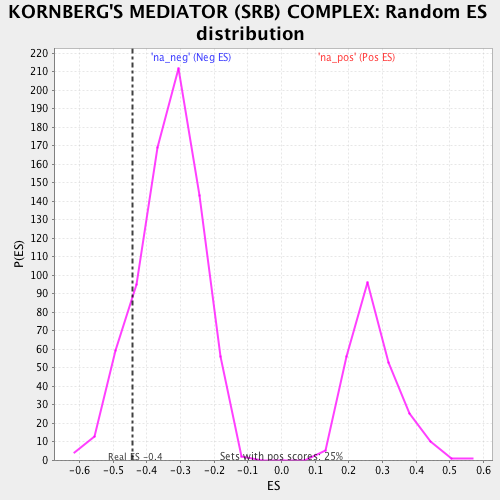

| | | Dataset | ranked_by_GAP.rnk |
| Phenotype | NoPhenotypeAvailable |
| Upregulated in class | na_neg |
| GeneSet | KORNBERG'S MEDIATOR (SRB) COMPLEX |
| Enrichment Score (ES) | -0.4414085 |
| Normalized Enrichment Score (NES) | -1.3198582 |
| Nominal p-value | 0.13280213 |
| FDR q-value | 0.40666357 |
| FWER p-Value | 1.0 |
Table: GSEA Results Summary
_COMPLEX_163.png) Fig 1: Enrichment plot: KORNBERG'S MEDIATOR (SRB) COMPLEX
Fig 1: Enrichment plot: KORNBERG'S MEDIATOR (SRB) COMPLEX
Profile of the Running ES Score & Positions of GeneSet Members on the Rank Ordered List
| PROBE | GENE SYMBOL | GENE_TITLE | RANK IN GENE LIST | RANK METRIC SCORE | RUNNING ES | CORE ENRICHMENT | | 1 | MED8 | | | 15 | 0.383 | 0.0747 | No |
| 2 | MED4 | | | 23 | 0.360 | 0.1501 | No |
| 3 | MED7 | | | 99 | 0.241 | 0.1487 | No |
| 4 | NUT2 | | | 132 | 0.209 | 0.1720 | No |
| 5 | SRB7 | | | 220 | 0.152 | 0.1418 | No |
| 6 | RGR1 | | | 419 | 0.051 | 0.0073 | No |
| 7 | SOH1 | | | 432 | 0.048 | 0.0091 | No |
| 8 | SRB4 | | | 595 | -0.020 | -0.1060 | No |
| 9 | CSE2 | | | 700 | -0.075 | -0.1659 | No |
| 10 | PGD1 | | | 743 | -0.091 | -0.1765 | No |
| 11 | SIN4 | | | 835 | -0.123 | -0.2162 | No |
| 12 | GAL11 | | | 845 | -0.130 | -0.1936 | No |
| 13 | SRB5 | | | 1182 | -0.295 | -0.3753 | Yes |
| 14 | SSN8 | | | 1243 | -0.333 | -0.3450 | Yes |
| 15 | SSN2 | | | 1287 | -0.360 | -0.2962 | Yes |
| 16 | NUT1 | | | 1303 | -0.375 | -0.2232 | Yes |
| 17 | SRB2 | | | 1312 | -0.383 | -0.1433 | Yes |
| 18 | MED6 | | | 1317 | -0.391 | -0.0587 | Yes |
| 19 | MED1 | | | 1351 | -0.447 | 0.0170 | Yes |
Table: GSEA details [plain text format]

Fig 2: KORNBERG'S MEDIATOR (SRB) COMPLEX: Random ES distribution
Gene set null distribution of ES for KORNBERG'S MEDIATOR (SRB) COMPLEX